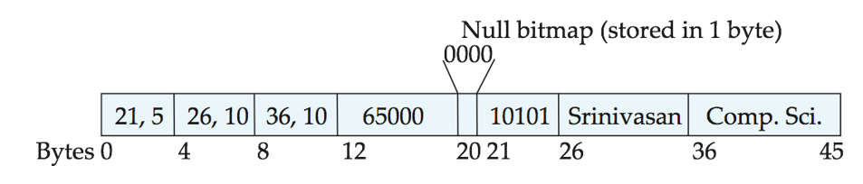
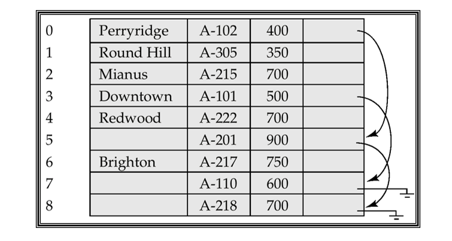

Lesson8
Storage and File Structure
存储管理器（Storage Manager） 是一个程序模块，提供数据库中低级数据与应用程序及查询之间的接口。
存储管理器负责以下任务： 1. 与文件管理器的交互 2. 高效地存储、检索和更新数据
存储管理器包含： - 事务管理器（Transaction Manager） - 授权和完整性管理器（Authorization and Integrity Manager） - 文件管理器（File Manager）：与文件系统交互，处理数据文件、数据字典和索引文件 - 缓冲区管理器（Buffer Manager）
简而言之，存储管理器确保数据库的高效和安全存储与访问，同时也管理文件的读取和更新操作。
minisql的架构：
Overview of Physical Storage Media
存储介质可以根据以下标准进行分类： 1. 数据访问速度(speed) 2. 每单位数据的成本(cost) 3. 可靠性(reliability)
+ 电源故障或系统崩溃时的数据丢失
+ 存储设备的物理故障（如：RAID）
这是你提供的数据库相关知识的翻译：
按可靠性分类的存储：
-
易失性存储（Volatile storage）：
当电源关闭时，内容会丢失。例如：DDR2、SDR。 -
非易失性存储（Non-volatile storage）：
即使电源关闭，内容也会保持不变。包括二级存储和三级存储，以及有电池备份的主存储器。
按速度分类的存储：
- 缓存（Cache）
- 主存储器（Main-memory）
- 快闪存储器（Flash memory）
- 磁盘存储（Magnetic-disk）
- 光盘存储（Optical storage）
-
磁带存储（Tape storage）
-
缓存（Cache）：最快且最昂贵的存储形式，属于易失性存储，由计算机系统硬件管理。
- 速度：≤ 0.5 纳秒（ns，1 ns = 10⁻⁹ 秒）；
- 大小：大约从 KB 到 MB。
-
主存储器（Main memory）：
-
快速访问（10到100 纳秒）。
- 一般来说，容量太小或太贵，无法存储整个数据库。
- 当前广泛使用的容量通常为几GB（1GB = 10⁹ 字节）。
- 容量持续增加，每字节成本也迅速且稳定地下降（大约每2到3年下降一倍）。
- 易失性：如果发生电力中断或系统崩溃，主存储器中的内容通常会丢失。
-
快闪存储器（Flash memory）：也被称为 电可擦可编程只读存储器（EEPROM）。
-
数据在电力中断时依然存在。
- 数据只能在一个位置写入一次，但该位置可以擦除并重新写入。
- 只能支持有限次数的写入/擦除周期（大约 10K 到 1M 次）。
- 擦除操作必须在整个存储区（memory bank）进行。
- 读取速度大约和主存储器一样快（< 100 ns）。
- 但写入速度较慢（约 10 us），擦除速度更慢。
- 每单位存储的成本大致和主存储器相当。
-
磁盘存储（Magnetic-disk）：
-
数据存储在旋转的磁盘上，通过磁力进行读写。
- 主要用于数据的长期存储，通常存储整个数据库。
- 数据必须从磁盘移到主存储器中才能访问，存储时也需要写回磁盘。
- 访问速度远低于主存储器（稍后会详细说明）。
- 直接访问（Direct-access）：与磁带不同，磁盘可以按任何顺序读取数据。
- 容量大，成本每字节比主存储器和快闪存储器低得多。
- 非易失性：在电力故障和系统崩溃时仍能保存数据（虽然磁盘故障可能会导致数据丢失，但这种情况非常罕见）
-
光盘存储（Optical storage）：
-
非易失性，通过激光从旋转的光盘上光学读取数据。
- CD-ROM（640 MB）和 DVD（4.7 GB 到 17 GB）是最常见的形式。
- 一次写入，多次读取（WORM） 光盘用于归档存储
- 也有支持多次写入的版本
- 读取和写入速度比磁盘存储慢
-
磁带存储（Tape storage）：
-
非易失性，主要用于备份（用于从磁盘故障中恢复）和归档数据。
- 顺序访问（Sequential-access）：比磁盘存取速度慢得多。
- 非常高的容量
- 磁带可以从驱动器中移除，存储成本远低于磁盘，但驱动器本身很昂贵。
- 磁带库（Tape jukebox）：用于存储大量数据，支持数百 TB（1TB = 10¹² 字节）甚至达到 1PB（1PB = 10¹⁵ 字节）的存储容量。
Jim Gray: Tape is Dead, Disk is Tape, Flash is Disk.
-
主存储（Primary storage）：
- 最快的存储介质，但属于易失性存储（例如：缓存、主内存）。
-
辅助存储（Secondary storage，联机存储器）：
-
层级中的下一级，非易失性，具有适中的访问速度。
- 也称为在线存储（on-line storage）。
- 例如：快闪存储器、磁盘存储。
-
三级存储（Tertiary storage，脱机存储器）：
-
层级中的最低级别，非易失性，访问速度较慢。
- 也称为脱机存储（off-line storage）。
- 例如：磁带存储、光盘存储。
Magnetic Disks
-
读写磁头（Read-write head）：
- 被定位得非常靠近盘片表面（几乎与其接触）。
- 负责通过磁性编码读取或写入数据。
-
盘片表面（Platter surface）：
-
被分成多个圆形磁道（tracks）。
- 在典型的硬盘中，每个盘片上有超过 50K 到 100K 个磁道。
-
每个磁道被分成多个扇区（Sectors）：
-
扇区（Sector） 是可以读取或写入的最小数据单位。
- 扇区的大小通常是 512 字节。
-
每个磁道上的扇区数通常为：
- 内侧磁道：500 到 1000 个扇区；
- 外侧磁道：1000 到 2000个扇区。
- 读取/写入一个扇区：
-
磁盘臂将磁头移动到正确的磁道上。
- 盘片持续旋转；数据在扇区经过磁头下方时被读取或写入。
-
磁头-盘片组（Head-disk assemblies）：
-
多个磁盘盘片安装在一个共同的轴上（通常是4到16个盘片）。
- 每个盘片都有一个磁头，所有磁头都安装在同一个磁臂上。
-
柱面（Cylinder）：
-
柱面 i 包括所有盘片上的第i个磁道。
-
磁盘控制器（Disk controller）：
-
作为计算机系统和磁盘驱动硬件之间的接口。
- 接受高层次的命令来读取或写入扇区。
- 启动执行如将磁盘臂移动到正确的磁道，实际读取或写入数据等操作。
- 计算并附加checksums到每个扇区，以验证数据是否正确读取。
- 如果数据损坏，高概率上存储的校验和将与重新计算的校验和不匹配。
- 确保成功写入：写入后会读取该扇区确认数据已正确写入。
- 执行坏扇区的重映射：将坏扇区从逻辑上映射到预留的物理扇区，并将映射记录在磁盘或其他非易失性存储器中。
访问时间 = Seek time(寻道时间) + Rotational latency(旋转等待时间)
- 寻道时间：类似读写头伸缩，到对应磁道上的时间
-
旋转延迟时间：磁盘是旋转的，当读写头飘到目标扇区的时间
- 很容易理解平均延迟时间是最坏情况延迟时间的一半(只旋转半圈)
美美体现磁盘存取的速度非常之慢。
Mean time to failure (MTTF, 平均故障时间)：硬盘在没有故障的情况下，预计能够连续运行的时间。
块（Block）：
- 块是指来自同一磁道的一系列连续扇区。
- 数据是以块的形式在磁盘和主内存之间传输。
- 块的大小通常范围从 512 字节 到 几个千字节。
- 较小的块：会导致更多的磁盘传输操作，因为需要更多的块来完成数据传输。
- 较大的块：虽然可以减少磁盘传输的次数，但可能会导致存储空间的浪费，因为某些块可能只有部分内容被使用。
- 现代硬盘的典型块大小范围是 4 到 16 千字节。
磁盘臂调度算法（Disk-arm-scheduling algorithms）：用于优化待处理的磁道访问顺序，以最小化磁盘臂的移动距离，从而提高磁盘的性能。
-
电梯算法（Elevator algorithm）：
- 电梯算法是一种常用的磁盘调度算法，其思想类似于电梯的上下运行。
- 磁盘臂会沿着一个方向（从外磁道到内磁道，或反之）移动，处理该方向上的下一个请求，直到该方向没有更多的请求。
- 然后，磁盘臂改变方向，继续处理新的请求，直到再次到达没有请求的位置。
- 这种方法确保了磁盘臂的移动是尽可能连续的，减少了不必要的反向移动，优化了磁盘的访问效率。
- 核心：减少反向移动，优化访问效率，因为移动距离影响了寻道时间
文件管理：类似将相关的信息存储在同一磁道或相邻的柱面上，减少磁头的移动，提高访问效率。
文件碎片化（File fragmentation）：
- 文件中的数据被插入或删除，导致空闲空间被打乱。
- 磁盘上的空闲块分散，导致新创建的文件的块分布在磁盘的不同区域。
But the system is generally unusable when these utilities are running。
非易失性写缓冲区（Nonvolatile write buffers）：
- 通过将数据块立即写入非易失性RAM缓冲区来加速磁盘写入操作。
-
非易失性RAM：包括电池备份的RAM或闪存（Flash Memory）。
-
即使发生电源故障，数据依然安全，会在电源恢复时写回到磁盘。
-
工作原理：
- 控制器会在磁盘没有其他请求，或某个请求已经等待了一段时间时，开始将数据写入磁盘。
- 这种方式允许数据库在进行操作时，保证数据在继续之前已经被安全存储，而不必等待数据写入磁盘。
- 这样就可以提高数据库的并发性能，减少写入操作的延迟。
重排写入操作：
- 写入操作可以被重排，以尽量减少磁盘臂的移动。这是因为数据最初是写入非易失性缓冲区，之后控制器可以优化写入顺序，而不需要依赖于实时的磁盘写入。
日志磁盘（Log disk）：专门用于写入块更新的顺序日志的磁盘。
-
它的作用与非易失性RAM（NV-RAM）类似，通常被用作一种加速数据存储的手段。
-
写入日志磁盘的速度非常快，因为不需要寻道（seek）。
- 不需要专门的硬件（例如NV-RAM），而是直接使用常规的磁盘来作为日志存储。
- 由于日志磁盘只进行顺序写入操作，它的性能通常要比随机写入的普通磁盘要高很多。
文件系统的写入顺序和性能：
- 文件系统通常会重新排序磁盘写入操作，以提高性能。这是为了减少寻道时间和优化磁盘访问。
-
日志文件系统则会确保按照安全的顺序将数据写入非易失性RAM或日志磁盘。这可以在出现故障时确保数据的完整性，因为它可以恢复写入操作的顺序，避免部分数据丢失或损坏。
-
例如，在系统崩溃后，日志可以帮助文件系统恢复到一致的状态，确保没有数据丢失。
*RAID
RAID：冗余独立磁盘阵列。
概括一下，RAID就是多个磁盘并行工作，效率显然高，同时将数据冗余存储在不同的磁盘上，类似备份，但是因为磁盘多，更容易坏(平均故障时间更短，可以说是直接单个磁盘平均故障时间/磁盘数)。
镜像（Mirroring）是常见的技术，即工作都在两个盘里一起做，这样相当于也备份了。
-
数据丢失的平均时间（Mean Time To Data Loss，MTTDL）取决于平均故障时间（MTTF）和修复时间（Mean Time To Repair，MTTR）。
-
例如：如果磁盘的MTTF为 100,000小时，MTTR为 10小时，则镜像磁盘对的数据丢失平均时间为：
\[ \text{MTTDL} = \frac{(\text{MTTF})^2}{2 \times \text{MTTR}} = \frac{(100,000)^2}{2 \times 10} = 500 \times 10^6 \text{小时} = 57,000 \text{年} \]
条带化技术（Striping）是将数据分散存储在多个磁盘上，以此提高传输速率。
比特级拆分（Bit-level striping）：将每个字节的比特分割存储到多个磁盘上。
- 在八个磁盘的阵列中，将每个字节的第i个比特写入第i个磁盘。
- 访问方式：每次访问可以并行地从多个磁盘读取数据，因此访问速度是单个磁盘的八倍。
- 缺点：比特级拆分会导致寻道时间和访问时间比单个磁盘更差。
- 由于其寻道和访问时间较差，比特级拆分现在使用得较少。
块级拆分（Block-level striping）：将数据文件分割成块，然后将每个块按顺序写入不同的磁盘。具体来说：
- 对于有\(n\)个磁盘的阵列，文件的第\(i\)个块将被写入到磁盘 \((i\ mod\ n) + 1\)。
- 优势：不同块的请求可以并行运行，只要它们位于不同的磁盘上。
- 长序列块的访问：如果请求的是一长串连续的块，所有磁盘都可以并行工作，从而加速数据的访问。
RAID level
RAID level 0
将数据分割成块并将这些块均匀分配到多个磁盘上来提高性能，然而显而易见的不存在备份，可靠性低。
RAID level 1
将数据写入两个磁盘（镜像），并同时进行块级条带化操作。
简而言之就是在level0的基础上追加了镜像技术，可靠性显然高了，但是存储效率低。
RAID level 2
基于比特级条带化和内存风格错误校正码（ECC），但由于其性能开销较大，已较少使用。
RAID level 3
按位交错奇偶校验来提高容错性，并通过将数据按位交错存储在多个磁盘上来提升数据传输速率
- 每个磁盘上存储一部分数据，另有一个专门的磁盘用来存储 奇偶校验位。
- 写操作：每次写入数据时，还需要计算并将对应的 奇偶校验位 写入到专门的奇偶校验磁盘上。
- 恢复数据：在一个磁盘发生故障时，可以通过将其他磁盘的位数据（包括奇偶校验位磁盘的数据）进行异或运算来恢复丢失的数据。
优点就是相较RAID 1，保证容错率的
* Tertiary Storage
Storage Access
文件按逻辑上划分为固定长度的存储单元，称为块（Block）。块是数据库系统中存储分配和数据传输的基本单位。
Buffer（缓冲区）：主内存的一部分，目的就是减少磁盘与内存的交互。
缓冲区管理器（Buffer Manager）：
- 职责：缓冲区管理器是一个子系统，负责在主内存中分配缓冲区空间，用来存储从磁盘读取的数据库块。
- 目标：缓冲区管理的主要目标是通过高效的管理策略，减少磁盘和内存之间的块传输，尽可能保持更多的数据块在内存中，从而提高查询效率。
好的，这是翻译：
- Page（页面）：数据的一个单位；
- Block（块）：磁盘空间的一个单位；
- Frame（帧）：缓冲池的一个单位；
在实际应用中，block ≈ page。
系统维护一个由 \
感觉这个过程类似内存的读取，体系好像上过，是一个有脏页面的write。
- 如果该块已经在缓冲区中：请求程序会收到该块在主内存（RAM）中的地址。
-
如果该块不在缓冲区中：
- 缓冲区管理器会在缓冲区中为该块分配空间，替换（丢弃）一些旧页面；如果没有空闲空间，则需要腾出空间以容纳新块。（在缓冲区中为新页面分配空间）
- 被替换（丢弃）的块只有在自上次从磁盘写入/读取以来被修改过的情况下，才会被写回磁盘。（将被覆盖的旧块若已被修改过，则写回磁盘）
- 一旦在缓冲区中分配了空间，缓冲区管理器会从磁盘读取该块到缓冲区，并将该块在主内存中的地址传递给请求者。（从磁盘读入新块放入缓冲区）
如果未被写回过磁盘(即脏块)，则需要在替换时将其写回磁盘以保持数据一致性。
-
缓冲区的替换策略：
- LRU（Least Recently Used）：替换最近最少使用的块
+ MRU（Most Recently Used）：替换最近使用最多的块
+ Toss-immediate strategy（立即丢弃策略）：在某些情况下，块中的数据处理完毕后无需保留（如一次性扫描），立即释放空间以提高缓冲池利用率。 + 如果当前块正在被使用，其就被pin住，不允许修改 + 使用完了，使用者需要unpin之，并指明其是否被修改(dirty位)，如果是被修改了， 则需要在替换前写回磁盘 + 如果被多个事务请求，可以用pin count来表示被pin的次数，直到所有事务都unpin了才可以被替换
File Organization
- 数据库存储为一组文件的集合。
- 每个文件是一系列记录（records）的序列。
- 每条记录是一系列字段（fields）的序列。
-
记录分为两种类型：
- 固定长度记录（Fixed-length records）。
- 可变长度记录（Variable-length records）。
fixed-length records
- 将记录i放在字节\(n*(i - 1)\)处
-
然而由于是固定的，可能超出边界
- 修改：不允许记录跨越块边界
移除i位置：
- 方法1：i+1...n往前移一个
- 方法2：n移到i位置
-
方法3：不移动数据，但将所有空闲记录链接到一个空闲列表（free list）。
- 空闲记录就是被移除的记录
variable-length records
-
可变的来源有很多：- 记录类型不同：type
- 记录类型允许一个或多个字段具有可变长度，例如字符串（varchar）
- 记录类型允许重复字段（在一些较旧的数据模型中使用）
- 属性按顺序存储
- 可变长度属性通过固定大小的（偏移量，长度）对表示，实际数据存储在所有固定长度属性之后
- 空值（Null values）通过空值位图（null-value bitmap）表示

-
槽页头部（Slotted page header）包含以下内容：
- 记录条目数量（Number of record entries）。
- 块中空闲空间的结束位置（End of free space in the block）。
- 每条记录的位置和大小（Location and size of each record）。
- 记录可以在页面内移动，以保持它们连续且页面内没有空闲空间；头部中的条目必须更新。（页内无碎片：删除时页内移动记录）
- 指针（索引）不应直接指向记录，而是应指向头部中记录的条目——间接指针（indirect pointer）。
表示方法
-
预留空间（Reserved space）
使用已知最大长度的固定长度记录；较短记录中的未使用空间用空值（null）或记录结束符号填充 + 指针（Pointers）
可变长度记录通过一组固定长度的记录表示，这些记录通过指针链接在一起。即使最大记录长度未知，也可以使用此方法。

- 缺点：在链中除第一条记录外的所有记录中，用于存储分支名称（branch-name）的空间被浪费。
-
解决方案：在文件中允许两种块：
- 锚块（Anchor block）：包含链中的第一条记录。
- 溢出块（Overflow block）：包含除链中第一条记录外的其他记录。